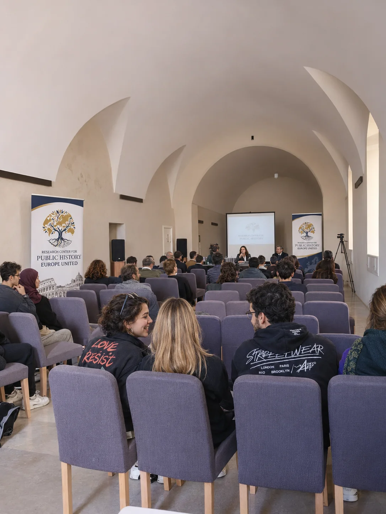
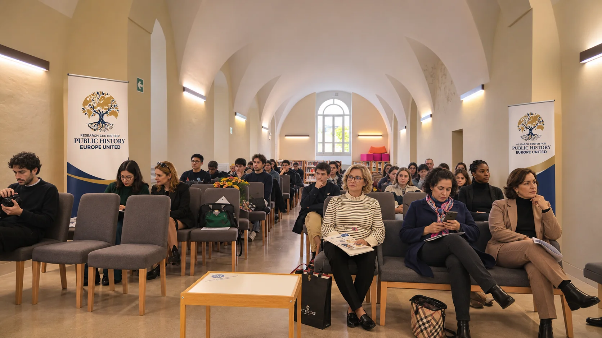

Autorità condivisa
Ricercatori e comunità partecipano insieme alla costruzione della conoscenza.
Un Centro Studi indipendente che unisce ricerca, educazione e partecipazione civica, con radici in Puglia e uno sguardo europeo.
Europe United è un’Associazione di Promozione Sociale – Ente del Terzo Settore dedicata alla storia, alla memoria e alla cittadinanza europea. Lavoriamo perché la conoscenza storica non resti confinata nelle università o negli archivi, ma contribuisca alla vita culturale e democratica delle comunità.
La nostra attività mette insieme Public History, storia orale, geografie della memoria, patrimonio culturale e strumenti digitali. Collaboriamo con scuole, musei, archivi, comuni, associazioni e cittadini.
Dedichiamo particolare attenzione alle aree rurali e periferiche, alle trasformazioni dei territori e alle voci che spesso restano fuori dai racconti dominanti.
Ricercatori e comunità partecipano insieme alla costruzione della conoscenza.
Trasparenza delle fonti, consenso, rispetto delle persone e attenzione alla complessità.
La pluralità delle storie aiuta a leggere criticamente il presente.
Ricerca, divulgazione e confronto. Una selezione di immagini condivise per raccontare gli spazi della partecipazione.



Il passato non appartiene a una sola voce. Diventa patrimonio comune quando impariamo ad ascoltarne molte.
Il Centro Studi integra capacità di ricerca, progettazione europea, comunicazione, educazione e innovazione digitale.
Taranto · Storia e memoria del territorio
Tarantino, ha lavorato come operaio e impiegato. Appassionato di storia, è autore di diverse pubblicazioni dedicate alla storia locale, alla storia operaia e alla storia di Taranto Vecchia.
Coltiva inoltre un interesse particolarmente vivo per la storia romana.
Progettazione e gestione di progetti europei
Comunicazione e coordinamento progettuale
Comunicazione digitale e media europei
Progetti creativi e narrazione culturale
Le competenze sono presentate in forma sintetica. I profili completi e le fotografie ufficiali saranno aggiunti dopo revisione editoriale.
Parliamo di archivi, patrimonio, cittadinanza e nuove collaborazioni.